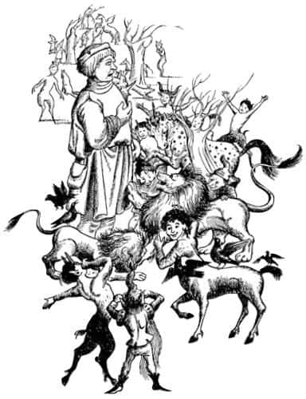
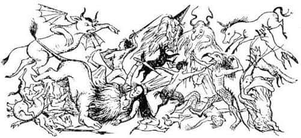
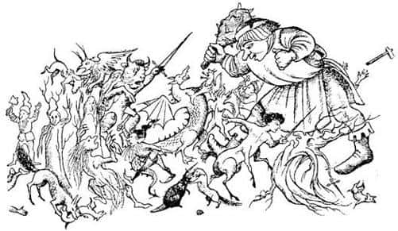

Heykellere Olanlar
“Ne olağanüstü bir yer!” diye bağırdı Lucy. “Tüm bu taş hayvanlar – ve insanlar! Burası – burası bir müze gibi.”
“Sus” dedi Susan, “Aslan bir şey yapıyor.”
Gerçekten de Aslan bir şeyler yapıyordu. Sıçrayarak, taş aslana yaklaşmış ve üzerine solumuştu. Sonra beklemeksizin hızla döndü – sanki kuyruğunu kovalayan bir kedi gibi – ve birkaç metre ötede sırtı ona dönük olarak duran cücenin (hatırlarsanız) üzerine de soludu. Sonra cücenin ötesindeki uzun boylu, taş orman perisinin üzerine atıldı. Ve yine hızla onun sağındaki taş tavşanla ilgilenmek üzere döndü, oradan da iki sentora doğru koştu. O anda Lucy:
“Oh, Susan! Bak! Aslan heykeline bak!” dedi.
Sanırım birinin, bir ocaktaki odunların içine konulmuş bir parça gazeteyi kibritle tutuşturuşunu izlemişsinizdir. O an için hiçbir şey olmuyormuş gibidir, sonra ufak bir alevin gazetenin kenarı boyunca ilerlediğini görürsünüz. Şimdi de öyle oluyordu. Aslan üzerine soluduktan sonra, taş aslan bir saniye süreyle olduğu gibi kaldı. Sonra beyaz mermer sırtı boyunca, altın rengi küçücük bir çizgi ilerledi – ve her tarafa yayıldı – sonra alevlerin gazetenin her tarafını yalaması gibi, bu renk aslanın tüm bedenine yayıldı, sonra da arka ayakları ve kalçaları henüz taş olmasına karşın yelesini salladı ve tüm o taş büklümler canlı tüylere dönüştü. Sonra, sıcak ve canlı kocaman kırmızı ağzını açarak müthiş bir şekilde esnedi. Artık arka ayakları da hareket ediyordu. Birini kaldırarak kaşınmaya başladı. Sonra Aslan’ı gördü, sıçrayarak onun yanına koştu, etrafında sıçrayıp oynamaya, sevinçle mırıldanmaya ve onun yüzünü yalamak için zıplamaya başladı.
Kuşkusuz çocuklar Aslan’ı izliyorlardı; fakat gördükleri manzara öylesine harikaydı ki biraz sonra onu unuttular. Heykellerin hepsi canlanıyordu. Avlu, artık müze değil hayvanat bahçesi gibi görünüyordu. Bütün yaratıklar, neredeyse kalabalıkta kaybolan Aslan’ın arkasından koşuyor, etrafında dans ediyorlardı. Avlu o ölümcül beyaz rengin yerine şimdi sentorların parlak kestane rengi bedenleri, tek boynuzlu atların çivit mavi boynuzları, kuşların göz kamaştırıcı tüyleri, köpeklerin, satirlerin ve tilkilerin kızıla çalan kahverengi kürkleri, cücelerin sarı çorapları ve kırmızı külahları, huş ağacı perilerinin gümüşi, kayın ağacı perilerinin şeffaf yeşil renkleri ve karaçam perilerinin neredeyse sarıya kaçan parlak yeşilliğiyle kaplanmıştı. Ve o ölümcül sessizlik gitmiş, her taraf, sevinçli kükreme, anırma, havlama, ciyaklama, kişneme, gıdaklama, tepinme, bağırış, çığırış, şarkılar ve gülüşlerle dolmuştu.

“Oh” dedi Susan değişik bir sesle. “Bak! Acaba – yani bu güvenli mi sence?”
Lucy baktı ve Aslan’ın taş devin ayaklarına soluduğunu gördü.
“Merak etmeyin!” diye bağırdı Aslan, “Ayaklarına can verirsek, bedeni onları izler.”
“Benim demek istediğim tam da bu değildi” diye fısıldadı Susan. Fakat Aslan onu dinlemiş olsaydı bile bir şeyler yapmak için artık çok geçti. Devin ayaklarındaki canlılık yukarıya doğru ilerliyordu. Şimdi ayaklarını hareket ettirebiliyordu. Az sonra omzundan sopasını kaldırdı, gözlerini ovuşturdu ve dedi ki:
“Hay Allah! Uyumuş olmalıyım. Şimdi! Aşağıda koşuşturan o lanetli küçük Cadı nerede. Ayağımın altında bir yerlerdeydi.” Ancak herkes olan biteni açıklamak için ona seslendiğinde, dev elini kulağına koyup olanları tekrarlattı ve böylece her şeyi anladı. Sonunda Aslan’ın önünde, dürüst ve çirkin yüzü sevinçle parlayarak, başı bir saman yığınının tepesinden daha yüksekte olmayacak kadar eğildi ve şapkasına dokunmayı sürdürerek selam verdi (Artık her türden dev İngiltere’de o kadar nadir bulunuyor ve o kadar azı iyi huylu ki, bire on bahse girerim, yüzü sevinçle parlayan bir dev görmemişsinizdir. Bakılmaya değer bir görüntüdür bu).
“Şatonun içine gelince!” dedi Aslan. “Canlanın bakalım. Yukarı kata, aşağı kata ve bayanın odasına bakın! Aranmadık köşe bırakmayın. Zavallı bir mahpusun nereye gizlenmiş olabileceğini asla bilemezsiniz.”
Hepsi koşuştular. Bu karanlık, iğrenç ve çürümüş kale, dakikalarca pencerelerin açılma kapanma sesleri ve herkesin bağırışlarıyla çınladı: “Zindanları unutmayın – şu kapıyı açmak için yardım edin! – İşte bir sarmal merdiven daha – Oh! Sanırım. İşte zavallı bir kanguru. Aslan’ı çağırın – öff! Ne biçim koku bu – Tuzak kapaklarına dikkat edin – burada yukarıda! Merdiven sahanlığında daha çok var!” Fakat en güzeli Lucy’nin bağırarak yukarıya koşturduğu zamandı:
“Aslan! Aslan! Bay Tumnus’u buldum. Oh, lütfen çabuk gel.”
Az sonra Lucy ve küçük Faun el ele tutuşmuş döne döne neşeyle dans ediyorlardı. Küçük adam, heykel olduğundan dolayı hiç de bozulmamıştı ve kuşkusuz Lucy’nin ona anlatacaklarıyla çok ilgileniyordu.
Arama nihayet sona erdi. Cadı’nın kalesinin bütün pencereleri ve kapıları açıktı. Karanlık ve gizli köşeleri ışığın ve bahar havasının doldurduğu tüm kale bomboştu şimdi. Kurtarılmış heykellerden oluşan kalabalık avluya çıkmıştı. Tam o sırada birisi sordu (sanırım Tumnus):
“Peki, dışarıya nasıl çıkacağız?” Çünkü Aslan burçlardan atlayarak içeriye girmişti ama kale kapıları hâlâ kilitliydi.
“Merak etmeyin” dedi Aslan ve sonra arka ayakları üzerine dikilerek deve doğru haykırdı. “Hey! Oradaki” diye kükredi, “Senin adın ne?”
“Dev Gürleyenşapşal efendim” dedi dev bir kez daha şapkasına dokunarak.
“Öyleyse Dev Gürleyenşapşal” dedi Aslan, “bizi dışarıya çıkar, tamam mı?”
“Elbette efendim. Bu benim için bir zevktir” dedi Dev Gürleyenşapşal. “Siz ufaklıklar kapılardan uzaklaşın.” Sonra büyük adımlarla kapıya yürüdü ve kocaman sopasıyla güm – güm – güm diye vurdu. İlk vuruşta kapılar gıcırdadı, ikincisinde çatladı ve üçüncü vuruşta paramparça oldu. Sonra kapıların iki yanındaki kulelere yöneldi. Birkaç dakika süren ağır darbe seslerinden sonra kulelerin ikisi ve bağlı bulundukları duvarın büyükçe bir bölümü bir moloz yığını halinde gümbürtüyle yere yıkıldı. Toz duman dağıldığında o kuru, çirkin ve taşlık avluda durup duvarların arasından, tüm otları, sallanan ağaçları, ormandaki pırıl pırıl dereleri, onun ardındaki mavi tepeleri ve onun da ötesinde mavi gökyüzünü görmek biraz tuhaftı.
“Terlemedim desem yalan olur” dedi dev, iri bir lokomotif gibi puflayarak. “Kondisyonum yerinde olmadığından oldu bu. Sanırım siz genç kızların yanında cep mendili denilen şeyden yoktur!”
“Evet, var” dedi Lucy, parmaklarının ucuna dikilerek ve mendilini erişebileceği kadar yükseğe tutarak.
“Teşekkürler bayan” dedi Dev Gürleyenşapşal eğilerek.
Biraz sonra Lucy kendini devin işaretparmağı ile başparmağı arasında havada bulduğunda epeyce korktu. Fakat yüzüne yaklaşmak üzereyken dev aniden irkildi ve sonra da homurdanarak onu nazikçe yere koydu, “Aman Tanrım! Mendil yerine küçük kızı almışım. Özür dilerim bayan, sizi mendil sanmıştım.”
“Hayır, hayır” dedi Lucy gülerek, “Mendil burada!” Dev bu kez mendili almayı becerebildi fakat bir sakarin tabletinin büyüklüğü size nasıl geliyorsa, bu mendilin büyüklüğü de deve öyle geliyordu. Lucy onun, mendili o kocaman yüzüne ciddiyetle ileri geri sürüştürdüğünü görünce, “Korkarım pek işinize yaramadı Bay Gürleyenşapşal” dedi.
“Hiç de değil. Hiç de değil” dedi dev nezaketle. “Bundan daha iyi mendil görmemiştim. O kadar zarif ve o kadar kullanışlı ki. Ne diyeceğimi bilemiyorum.”
“Ne kadar nazik bir dev!” dedi Lucy Bay Tumnus’a.
“Ah, evet” diye cevapladı Faun. “Bütün Şapşallar her zaman öyleydi. Narnia’daki dev aileleri arasında en fazla saygı duyulanlarından biridir Şapşallar. Belki pek akıllı değillerdir (ben akıllı olan bir dev görmedim henüz) ama köklü bir ailedirler. Gelenekleri bilirsiniz. Eğer o diğer türden bir dev olsaydı Cadı onu asla taşa çevirmezdi.”
Bu noktada Aslan pençelerini çırptı ve herkesi sessizliğe davet etti.
“Bugünkü işimiz henüz bitmedi” dedi, “yatağa girmeden önce sonunda Cadı’yı yeneceksek bir an önce savaşın olduğu yeri bulmalıyız.”
“Ve savaşmalıyız sanırım efendim” dedi sentorların en büyüğü.
“Elbette” dedi Aslan. “Şimdi! Bize ayak uyduramayacak olanların – yani çocuklar, cüceler ve küçük hayvanların – diğerlerinin – yani aslanlar, sentorlar, atlar, tek boynuzlu atlar, devler ve kartalların sırtına binmesi lazım. İyi koku alanlar savaşın nerede olduğunu anlamak için ön tarafa, biz aslanların yanına gelmesi gerekiyor. Canlanın ve kendinize çekidüzen verin.”
Büyük bir telaş ve neşeyle denileni yaptılar. Topluluğun en hoşnut kişisi çok meşgulmüş gibi davranan, ama gerçekte karşılaştığı herkese, “Dediğini duydun mu? Biz aslanlar. Bu sadece o ve ben demek. Biz aslanlar. Aslan’ın sevdiğim yanı da bu. Araya mesafe koymuyor. Biz aslanlar. Bu, o ve ben demek” diyerek koşuşturan diğer aslandı. Aslan onun sırtına üç cüce, bir orman perisi, iki tavşan ve bir kirpi bindirene kadar bunu söylemeye devam etti. Bu onu azıcık sakinleştirdi.
Hazır olduklarında (herkesi uygun sıraya koyarken Aslan’a gerçekte en fazla yardım eden bir çoban köpeğiydi) kale duvarlarındaki aralıktan dışarıya çıktılar. Önce aslanlar ve köpekler her yönde yürüyerek etrafı kokladılar. Sonra büyük bir tazı kokuyu aldı ve ulumaya başladı. Bundan sonra hiç vakit kaybetmediler. Bütün köpekler, aslanlar, kurtlar ve diğer av hayvanları burunları yerde son hızla ilerliyorlardı. Yaklaşık yarım mil gerilerinden gelen diğerleri olabildiğince hızlı, onları takip ediyorlardı. Gürültü, İngilizlerin tilki avındaki gibiydi. Fakat daha güzeldi. Çünkü tazıların müzikli sesleri arada bir diğer Aslan’ın kükremesine ve o sesler de Aslan’ın çok daha derin ve korkunç kükremesine karışıyordu. Kokuyu izlemek kolaylaştıkça hızlandılar. Daha sonra dar ve kıvrımlı bir vadinin son dönemecine geldiklerinde, Lucy tüm seslerden farklı sesler duydu – içinde tuhaf duygular uyandıran değişik sesler. Haykırışlar, çığlıklar ve metalin metale çarpmasından çıkan madeni seslerdi bunlar.
Dar vadiden dışarıya çıktıklarında Lucy seslerin nereden geldiğini anladı. Peter, Edmund ve Aslan’ın ordusunun geri kalan bölümü dün gece gördüğü iğrenç yaratıklara karşı umutsuzca savaşıyorlardı. Gün ışığında daha tuhaf, daha şeytani ve daha da çirkin görünen yaratıklar sayıca üstündüler. Düşmana oranla çok az sayıda olan Peter’in ordusunu arkadan görüyorlardı. Savaş alanının her tarafında heykeller vardı. Anlaşılan Cadı asasını kullanmıştı. Ama şimdi taş kaması elinde, Peter’le dövüşmekteydi. – öyle bir dövüştü ki Lucy olanları zorlukla seçebiliyordu. Gördüğü, yalnızca taş kama ve Peter’in kılıcının parıltılarıydı. Öyle hızlı hareket ediyorlardı ki, sanki üç kama ve üç kılıç vardı. Cadı ve Peter savaş alanının tam ortasındaydı. Savaş ikisinin çevresinde sürüp gidiyordu. Lucy’nin baktığı her yerde korkunç şeyler oluyordu.


“Sırtımdan inin çocuklar” diye kükredi Aslan. İkisi de yuvarlanarak indiler. Ve sonra batıdaki ilk ışıktan doğudaki sahile kadar tüm Narnia’yı sarsan bir kükremeyle Aslan, Beyaz Cadı’nın üstüne atıldı. Lucy, Cadı’nın bir an için Aslan’a dehşet ve şaşkınlıkla baktığını gördü. Sonra Aslan ve Cadı beraberce yere düştüler. Aynı anda Aslan’ın kaleden kurtardığı bütün yaratıklar – cüceler savaş baltalarıyla, köpekler dişleriyle, dev elindeki asasıyla (yürürken onlarca düşmanı ezmişti), tek boynuzlu atlar boynuzlarıyla, sentorlar kılıçları ve toynaklarıyla – düşman hatlarına doğru çılgınca bir saldırıya geçtiler. Peter’in yorgun ordusunun morali düzeldi. Yeni gelenlerin attığı savaş naraları tüm ormanda yankılanırken, düşmanlar tiz seslerle çığlıklar atıp, anlaşılmaz şeyler söylediler.